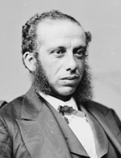

|

|

|
|
|
Born in Aiken, South Carolina, the son of a slaveholding free black tailor
and a mother of Haitian ancestry, Robert Carlos DeLarge attended primary school in North
Carolina and high school in Charleston. He was a member of the Brown Fellowship
Society, a fraternal and charitable association that admitted only mulatto
members. During the Civil War, he was employed by the Confederate navy. In 1865,
DeLarge obtained employment with the Freedmen's Bureau. Along with more than one
hundred other Charleston free blacks, he signed a petition to the state
constitutional convention of 1865 asking impartial suffrage but acknowledging
that the "ignorant" of both races could be barred from voting. He attended the
state black convention in that year and chaired the platform committee at the
Republican state convention of 1867. He attended the South Carolina labor
convention of 1869. According to the census of 1870, DeLarge owned $6,650 in
real estate.
DeLarge held numerous offices during Reconstruction. He was a delegate to the
constitutional convention of 1868; served in the state House of Representatives,
1868-70, where he chaired the ways and means committee; and served as head of
the state land commission. He was also a member of the Sinking Fund Commission,
a member of the board of regents of the state lunatic asylum, and a magistrate
in Charleston. He also worked for the Freedmen's Bureau. In 1870, DeLarge was
nominated for the U.S. House of Representatives as part of an effort by black
leaders to obtain more offices. If elected, he declared, "I shall demand for my
race an equal share everywhere." DeLarge was elected to Congress, serving
1871-73, but spent most of his term fending off charges of electoral fraud. He
was unseated in 1873. DeLarge's tenure on the land commission was marked by
fraud and mismanagement, in which he was implicated. He died of consumption in
Charleston.
Source: Eric Foner, Freedom's Lawmakers: A Directory of Black
Officeholders during Reconstruction (New York: Oxford University Press,
1993), 61.
|